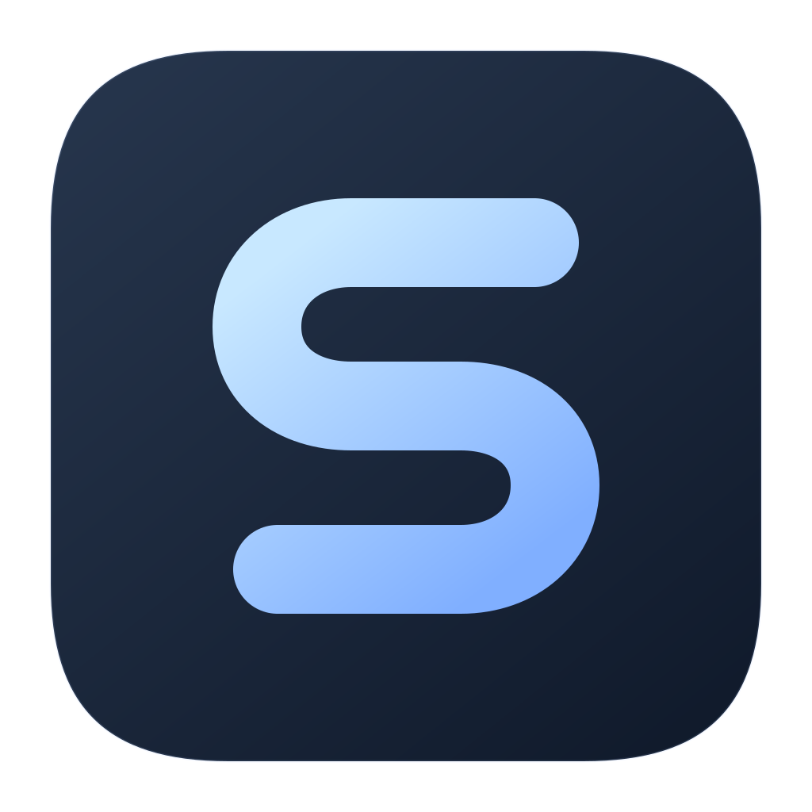

<!doctype html>
<html lang="zh-CN"><meta charset="UTF-8"><meta name="viewport" content="width=device-width,initial-scale=1"><title>序程 · Seqivo</title>
<style>
*{box-sizing:border-box}body{margin:0;background:#f2f4f8;color:#172436;font-family:-apple-system,BlinkMacSystemFont,"Segoe UI",sans-serif;-webkit-font-smoothing:antialiased}
main{width:1440px;margin:auto;padding:68px 80px 48px}.header{display:flex;justify-content:space-between;align-items:start}.wordmark{font-size:62px;font-weight:600;letter-spacing:-2.4px;line-height:1}.cn{font-size:28px;font-weight:500;letter-spacing:5px;margin-top:20px}.purpose{text-align:right;padding-top:8px;font-size:14px;letter-spacing:1px;color:#6d7889}.tagline{font-size:22px;letter-spacing:.5px;margin:17px 0 0;color:#293d56}
.grid{display:grid;grid-template-columns:1fr 1fr;gap:24px;margin-top:48px}.card{height:476px;border-radius:32px;position:relative;display:flex;flex-direction:column;align-items:center;justify-content:center;overflow:hidden}.light{background:linear-gradient(140deg,#fff,#e9eef6)}.dark{background:linear-gradient(140deg,#1b2638,#101925);color:#edf4ff}.icon{width:300px;height:300px;filter:drop-shadow(0 18px 23px #17263c10)}.dark .icon{filter:drop-shadow(0 18px 23px #00000030)}.label{font-size:15px;margin-top:28px;letter-spacing:3px;font-weight:500;color:#68778d}.dark .label{color:#a7b6cc}
.footer{margin-top:36px;display:flex;align-items:center;justify-content:space-between}.sizes{display:flex;gap:22px;align-items:center;height:58px}.sizes img{display:block}.divider{width:1px;height:28px;background:#d8dee7;margin:0 2px}.mono{display:flex;align-items:center;gap:22px}.mono img{opacity:.82}.note{font-size:13px;line-height:1.8;color:#728096;letter-spacing:.25px;text-align:right}.accent{color:#316deb}
@media(max-width:900px){main{width:100%;padding:32px 20px}.wordmark{font-size:42px}.cn{font-size:22px}.purpose{font-size:11px}.tagline{font-size:15px}.grid{gap:12px;margin-top:30px}.card{height:280px;border-radius:24px}.icon{width:180px;height:180px}.label{font-size:12px;margin-top:16px}.footer{align-items:start;gap:24px}.sizes{gap:10px;flex-wrap:wrap}.note{font-size:10px}.mono{gap:12px}}
</style><main><div class="header"><div><div class="wordmark">Seqivo<span class="accent">.</span></div><div class="cn">序程</div></div><div class="purpose">跨 AI 的任务与验收看板<p class="tagline">让每一步，都有着落。</p></div></div>
<div class="grid"><div class="card light"><div class="label">日间 · 清晰从容</div></div><div class="card dark"><div class="label">夜间 · 安静专注</div></div></div>
<div class="footer"><div class="sizes"><div class="divider"></div><div class="mono"></div></div><div class="note">一条连续的 S 路径<br>串起计划、行动与结果</div></div></main></html>